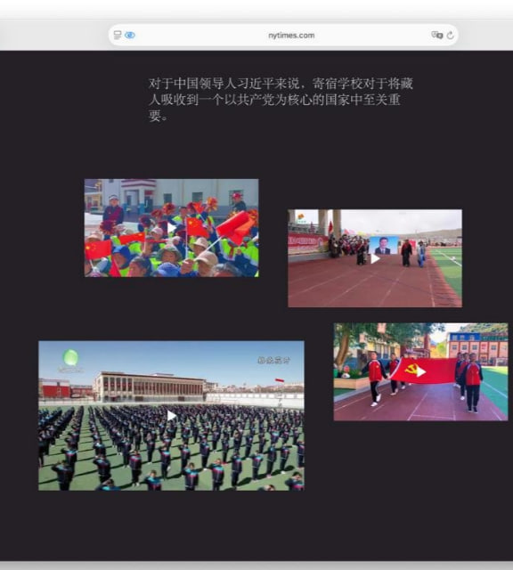
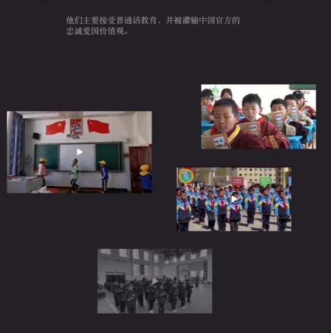
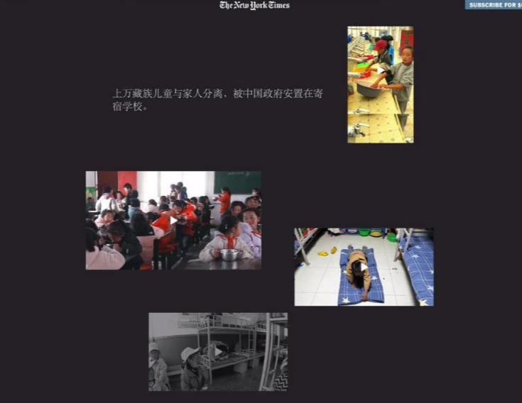

RT @whyyoutouzhele: 6月24日，中国官方举行新闻发布会，有记者就西藏寄宿制被西方指责“强制同化，强迫寄宿，侵犯人权”进行提问，统战部官员进行了回应：与事实不符。
然而《纽约时报》去年详细报道了中国在西藏强行推动寄宿制造成的各种侵犯人权的现象。中国强制藏族儿童…

然而《纽约时报》去年详细报道了中国在西藏强行推动寄宿制造成的各种侵犯人权的现象。中国强制藏族儿童…



6月24日，中国官方举行新闻发布会，有记者就西藏寄宿制被西方指责“强制同化，强迫寄宿，侵犯人权”进行提问，统战部官员进行了回应：与事实不符。
然而《纽约时报》去年详细报道了中国在西藏强行推动寄宿制造成的各种侵犯人权的现象。中国强制藏族儿童入读寄宿学校，文化认同遭系统性抹除。 https://t.co/4YPCXdaNWT https://t.co/ZSyrCuIniP
然而《纽约时报》去年详细报道了中国在西藏强行推动寄宿制造成的各种侵犯人权的现象。中国强制藏族儿童入读寄宿学校，文化认同遭系统性抹除。 https://t.co/4YPCXdaNWT https://t.co/ZSyrCuIniP